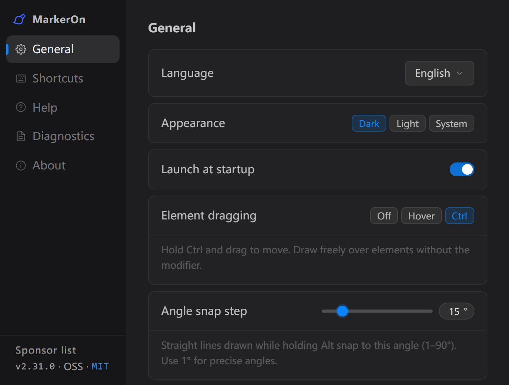

One window
for every setting
Five tabs cover appearance, shortcuts, help, diagnostics and version info. Changes apply instantly — no restart.
General
Theme, element dragging, whiteboard color, eraser and laser modes, angle snap
Shortcuts
Record global hotkeys; conflicts and invalid combos surface immediately
Help
One row per action — the in-session keys you actually use
Diagnostics
Export a diagnostics bundle and jump straight into a GitHub issue
About
Update check, sponsor list, and open-source license